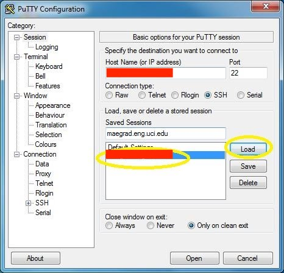
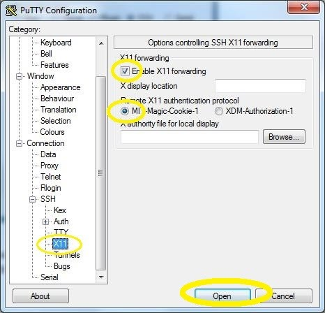
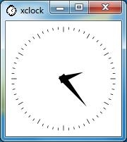

Sometimes we need to interact with Linux through X window from our PC like installing a graphic application. It may be a problem if linux server does not have graphic UI installed. And it is very comon in Linux server. People tends to believe the X window must be installed and be running on remote Linux server. In fact, the server only run the X support libraries so that the GUI application can create GUI on it, then send the actual GUI to any X server on any display. So we can run X server locally and redirect ‘screen’ to our PC.
Here we are going to use X11 forwarding to display X window in our PC.
Install Xming
Configure Putty
- In the box under Saved Sessions type name of your Linux server

- On the left hand side, find the X11 configuration category by double-clicking on SSH and then clicking on X11
- In this window, make sure the box label Enable X11 forwarding is checked

Verify
To test if X is working, enter ‘xclock’. If you can see a new window appear a small clock, Congratulations! You have successfully made it work
